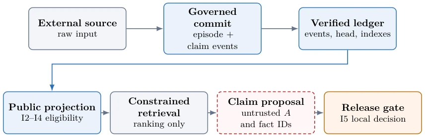
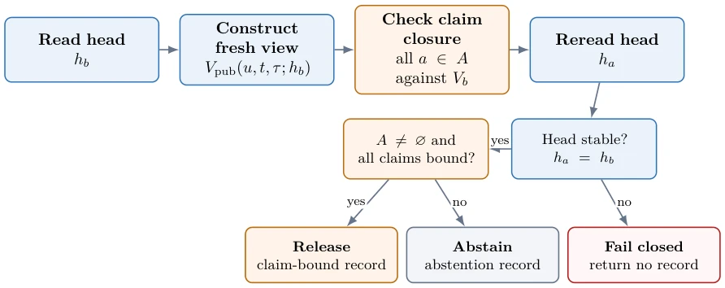

This paper puts a "lock" on long-term Agent memory systems. The authors did not develop a new model, but instead implemented a strict "Contract", forcibly stipulating how memory is stored, queried, and published. Highlights include "dual-timestamp" and "Fail-Closed", pulling memory out of the "retrieval is truth" illusion, emphasizing source binding and conflict isolation. For embodied intelligence, state consistency is crucial, but this work resembles governance at the database level rather than enhancing model reasoning capabilities. It guarantees "what I said hasn't changed", not "what I said is correct". Experimental data looks impressive (100% match), but that is "self-verification" in a closed environment, making no promise regarding external world truth (World Truth). For embodied intelligence, this is more like a fail-safe design rather than an intelligent core, suitable as underlying infrastructure rather than algorithmic innovation.
Long-term Agents need to save facts across interactions, but existing Retrieval-Augmented Generation (RAG) or memory systems (e.g., [5], [13]) only solve "finding" not "usability". Retrieving relevant snippets does not mean the fact is currently assertable; it may be contradictory, covered, or withdrawn. Existing work like HaluMem [4] focuses on hallucination propagation, LongMemEval [9] measures interaction memory, but neither defines state semantics before persistent state supports public assertion. For example, after a user moves, old addresses should not be cited again; after deleting history, old snapshots should not resurrect. Existing systems lack a mandatory isolation mechanism for "stale records", causing extraction errors to be repeatedly cited, forming the illusion of a "stable history". In embodied scenarios, erroneous memory can lead to task failure. This paper aims to bridge the gap between retrieval and assertion, ensuring persistent memory passes strict source binding and lifecycle checks before supporting public claims, preventing state pollution.
The overall process is divided into: Raw Acquisition -> Controlled Submission (Ledger) -> Public Projection -> Retrieval Ranking -> Publication Gating. Core innovations lie in five executable clauses (I1-I5). I1 guarantees ledger integrity (hash chain, sequence number). I2 enforces source binding; public facts must have source byte references, prohibiting unverified inferences from entering the public view. I3 isolates unresolved conflicts; when single-value attribute conflicts occur, neither party is assertable. I4 implements a public non-resurrection strategy; history reads after the current delete barrier cannot resurrect deleted facts. I5 structured publication closure; before publication, all claims must be verified to have exact source binding in a fresh public view, and the ledger head (Head) must be stable. The system adopts a dual-timestamp model (transaction time + valid time), supporting separation of audit view and public view. Publication gating adopts a "Fail-Closed" mechanism; if the ledger head changes during the decision process, it errors directly without returning records, ensuring state consistency. This provides verifiable state boundaries for embodied Agents.

Figure 1: Public-memory path and trust boundaries. Raw acquisition is outside governed state; the authenticated ledger is the source of public projection. I2 establishes syntactic source binding, not semantic entailment. Retrieval ranks eligible candidates but neither admits claims nor authorizes release. Lifecycle writes are listed in table 1, and the local-decision protocol is expanded in figure 2.

Figure 2: Fail-closed structured-release protocol. Closure is evaluated over the view bound to hb, and the local record commits to DA, policy and normalizer versions, query context, snapshots, and head. Equality of the independently reread ha is a precondition for either release or abstention; a mismatch returns no record.
Constructed GPM-ReleaseBench v1 (3600 hidden test cases) and sealed end-to-end service evaluation (2400 clusters). Baselines include raw append, latest-first, Flat conflict retention strategy, and local Qwen2.5-7B. Metrics cover atomic match, unsafe publication, safety coverage. GPM achieved 3600/3600 full match on the hidden benchmark, unsafe publication was 0, while the strongest simple strategy was only 1800/3600. In end-to-end evaluation, the controlled channel was 2400/2400 correct, fixing all 1800 failures of the 7B baseline with no rollback. Finite model checking covers 330,000 semantic states with no counterexamples. In terms of performance, the incremental engine is 3.5 times faster than the strict mode. Results prove the contract is effective within closed domains, but not an open world accuracy guarantee. This provides deterministic guarantees for embodied Agent long-term memory, although compute overhead requires trade-off.